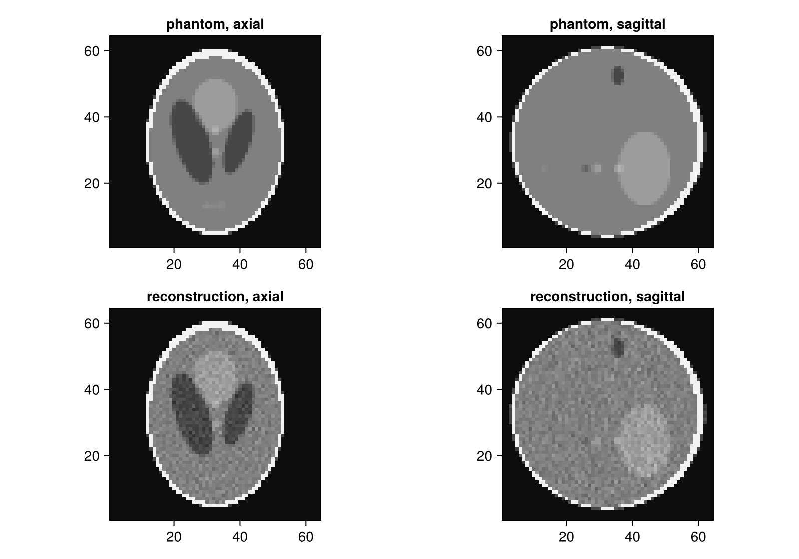

Getting Started
This example simulates a cone-beam CT scan of the 3D Shepp-Logan phantom in which the object moves along the rotation axis during the scan, and reconstructs it iteratively with RegularizedLeastSquares.jl.
using CTOperators, ImagePhantoms, RegularizedLeastSquares, CairoMakie, Random
using ImageGeoms: axisThe image
The image is the voxel grid we reconstruct into, described by an ImageGeom from ImageGeoms.jl: 64³ voxels of 1 mm, centred at the origin.
n = 64
image = ImageGeom(; dims=(n, n, n), deltas=(1.0, 1.0, 1.0));The object is the 3D Shepp-Logan phantom of ImagePhantoms.jl, a set of ellipsoids. Sampled on the image grid (each voxel the average of 2³ samples) it is the ground truth.
objects = ellipsoid(ellipsoid_parameters(; fovs=(n, n, n)))
x_true = Float32.(phantom(axis(image, 1), axis(image, 2), axis(image, 3), objects, 2));The scan
In a cone-beam CT scanner an X-ray source and a flat detector sit on opposite sides of the object. The source sends a cone of rays through the object to the detector; every detector cell measures how strongly the object attenuated the ray that reaches it, after taking the logarithm the line integral of the attenuation along that ray. Source and detector rotate about the object, and in our scan the object also moves along the rotation axis.
The geometry describes this: per view the position of the source and of the detector. The source is 128 mm from the rotation axis and 256 mm from the detector, so the object is magnified by 2 on the detector; the detector has 192 × 96 cells of 1 mm, two rays per voxel at the rotation axis. (With one ray per voxel, Siddon's weights cover the voxels unevenly and the reconstruction shows a checkerboard pattern.) Seen from the object, which moves by half the volume height per turn, source and detector run on a helix: two turns, 240 views.
geometry = helical_cone_beam(; angles=range(0, 4pi, 240), pitch=n / 2, z0=-n / 2, dso=2n, dsd=4n,
nu=192, nv=96, du=1.0, dv=1.0);The projector holds the geometry and is created once. op * x computes the line integrals of the image x along all rays, adjoint(op) * y the back projection. Siddon's method computes a line integral by walking along the ray from voxel to voxel and adding each voxel's value times the length of the ray inside it.
op = SiddonProjector(image, geometry);The simulated measurement: the projection of the phantom with Gaussian noise of 0.1 % of its maximum, one image of 192 × 96 values per view.
Random.seed!(1)
y = op * x_true
y .+= 0.001f0 * maximum(y) .* randn(Float32, size(y))
size(y)(192, 96, 240)One view
The phantom's ellipsoids in the volume, the source (orange dot), some of its rays and the detector, coloured by the measured line integrals: bright where the rays crossed much of the object. Rotate and zoom with the mouse.
The motion
Over the scan the source runs on its helix around the object (orange line). The slider moves through the views: source, cone and detector with the projection of that view. The object moves out of the cone at the top while new parts enter at the bottom.
Reconstruction
CGNR solves the least-squares problem min ‖A x − y‖² with the projector as A, using only forward and back projections. It needs the normal operator adjoint(op) * op, which LinearOperatorCollection.jl provides.
solver = createLinearSolver(CGNR, op; iterations=40);
x = reshape(solve!(solver, vec(y)), size(x_true));Slices of the phantom and the reconstruction through the small structures of the phantom, with a narrow window for their contrasts of 1-2 %:
fig = Figure(size=(800, 560))
window = (0.98, 1.06)
for (i, (name, img)) in enumerate((("phantom", x_true), ("reconstruction", x)))
heatmap(fig[i, 1], img[:, :, 24]; colormap=:grays, colorrange=window,
axis=(; title="$name, axial", aspect=DataAspect()))
heatmap(fig[i, 2], img[div(n, 2), :, :]; colormap=:grays, colorrange=window,
axis=(; title="$name, sagittal", aspect=DataAspect()))
end
On the GPU
The same code runs on a GPU when the projector is created with the GPU's array type and the data lives there, e.g. with CUDA.jl:
using CUDA
op = SiddonProjector(image, geometry; storage=CuArray)
y = op * CuArray(x_true)This page was generated using Literate.jl.